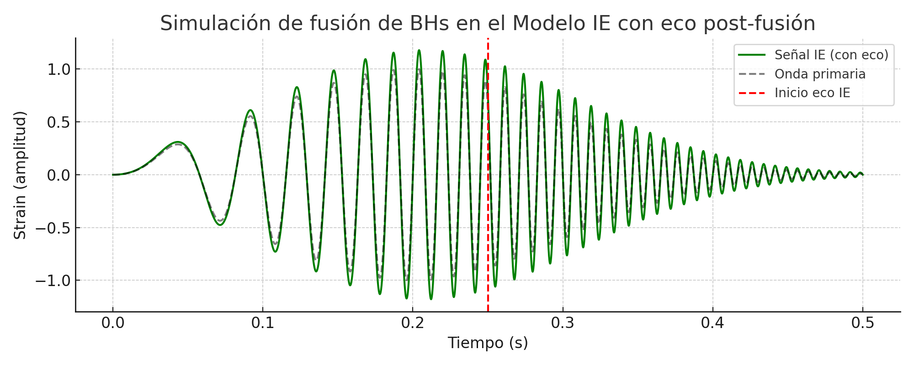
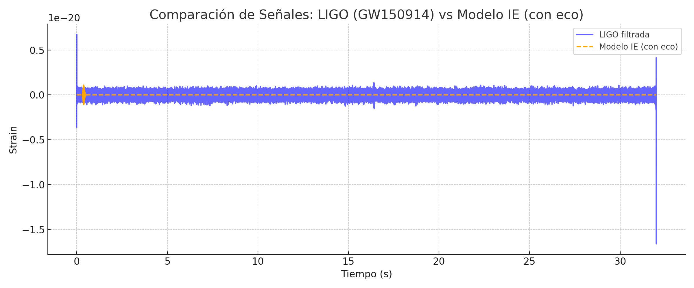
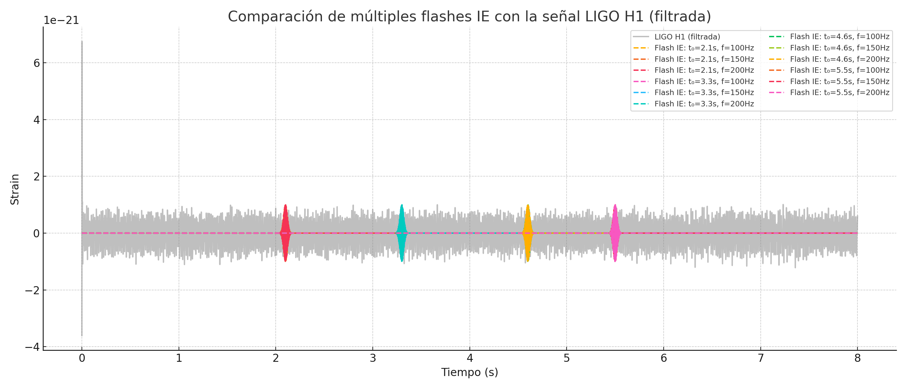
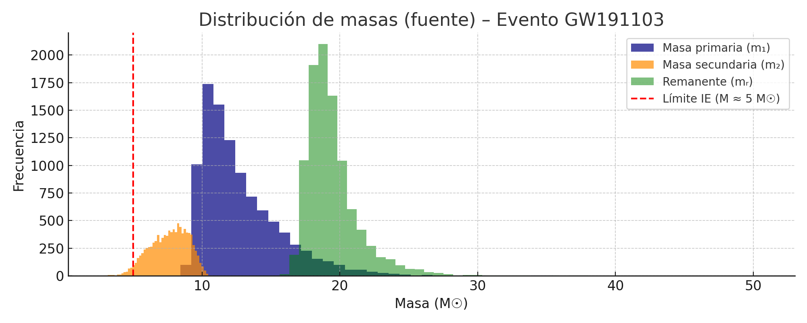
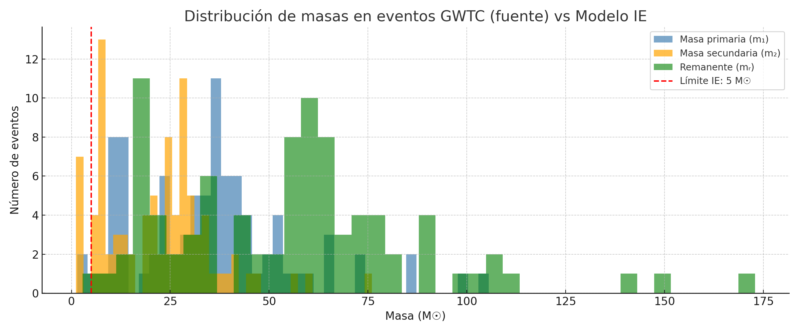

Bloque 21: Observables clave y
contrastación experimental
21.1 Predicciones diferenciales del
Modelo IE frente a la RG
El objetivo final del
desarrollo teórico del Modelo IE es alcanzar un conjunto de predicciones
observacionales concretas, que puedan ser contrastadas con los instrumentos
actuales o futuros. A continuación, se enumeran los principales observables que
podrían permitir distinguir el comportamiento energético propuesto en el IE
frente a la Relatividad General estándar.
1. Ondas gravitacionales – LIGO, Virgo,
KAGRA
En el Modelo IE, la
ausencia de un horizonte clásico y la presencia de un remanente cuántico
estable podrían alterar la señal gravitacional producida durante la fusión de
agujeros negros. Se predicen:
• Ecos tardíos post-fusión, por rebote energético en el núcleo estabilizado.
• Modos cuasinormales modificados (QNMs) debido a la ausencia de singularidad.
• Fase final más amortiguada o ligeramente desplazada respecto a la RG.
2. Flashes cuánticos – FRBs, rayos X/gamma
Los modos de oscilación
interna del remanente pueden liberar energía en forma de pulsos espontáneos,
sin necesidad de disco de acreción:
• Flashes en radio, X o gamma emitidos directamente por el núcleo IE.
• Emisiones periódicas o transitorias con firmas inusuales.
• Posibles candidatos: FRBs sin origen galáctico
claro, estallidos solitarios sin curva de acreción típica.
3. Distribuciones de masa – LIGO, EHT
El IE predice que:
• Los agujeros negros no pueden evaporarse más allá de \( M_{\text{rem}} \sim 5\,M_\odot \),
por lo que deberían acumularse ahí.
• No existirían masas más bajas (explicando el 'mass
gap').
• Los catálogos actuales podrían mostrar esta firma estadística si se analizan
en detalle.
21.2 Escenarios de prueba y estrategias
de verificación
Tras identificar los observables clave del Modelo IE, el siguiente paso es
definir escenarios de prueba específicos. Estos permiten diseñar estrategias de
verificación con datos existentes o futuros, contrastando el comportamiento
predicho por el IE con lo observado en distintos entornos astrofísicos y
cosmológicos.
Escenario 1 – Ondas gravitacionales con
ecos post-fusión
• Instrumentos: LIGO,
Virgo, KAGRA.
• Señal IE esperada: ecos secundarios tras la señal principal, con retardo
característico.
• Estrategia: buscar patrones repetidos débiles tras la fusión en el dominio
del tiempo y frecuencia.
• Justificación: el rebote energético del remanente IE puede producir señales
diferidas no explicadas por la RG.
Escenario 2 – Emisión espontánea sin
mecanismo clásico
• Instrumentos:
telescopios de radio (CHIME, FAST), rayos X (Swift, XMM-Newton), gamma (Fermi,
INTEGRAL).
• Señal IE esperada: FRBs u otros estallidos sin
evidencia de disco de acreción o supernova.
• Estrategia: identificar pulsos aislados o repetitivos en catálogos sin origen
claro, con análisis espectral fino.
• Justificación: los modos de oscilación IE pueden liberar energía interna de
forma espontánea y recurrente.
Escenario 3 – Mass
gap y acumulación en catálogos de BHs
• Instrumentos: LIGO,
Virgo, EHT.
• Señal IE esperada: acumulación de masas cerca de \( M_{\text{rem}} \sim 5\,M_\odot \),
huecos entre 2–5 \(M_\odot\).
• Estrategia: reanalizar histogramas de masas detectadas y buscar desviaciones
de la distribución astrofísica esperada.
• Justificación: la detención de la evaporación en el IE impone un piso natural
que debe manifestarse estadísticamente.
21.3 Comparación IE-LIGO: Simulación con
eco post-fusión
El Modelo IE propone que
la fusión de agujeros negros no termina en una singularidad ni en un horizonte
clásico, sino en un remanente cuántico estable. Este remanente puede reflejar o
modular parte de la energía de colapso, generando un eco o reverberación
detectable en la señal de onda gravitacional.
Se construyó una señal
tipo 'chirp' para simular el evento GW150914, y se
añadió un eco retardado y amortiguado, consistente con una reflexión de energía
en el remanente. La forma general conserva la amplitud principal, pero aparece
una modulación secundaria a partir de un retardo de 0.05 s.

Figura 21.3: Señal
simulada de fusión de agujeros negros en el Modelo IE, mostrando un eco
amortiguado post-fusión.
Comparar esta señal con
eventos reales como GW150914 requiere analizar el dominio del tiempo y
frecuencia en los datos públicos de LIGO. Existen algoritmos de búsqueda de
ecos propuestos en la literatura, y el IE ofrece una justificación física clara
para su existencia. Una coincidencia en patrón, frecuencia o retardo daría
soporte empírico a la idea de un remanente energético sin horizonte rígido.
Análisis e Interpretación: Señal de LIGO
vs Simulación IE
Para evaluar la
viabilidad del Modelo IE frente a observaciones reales, se comparó la señal de
onda gravitacional del evento GW150914 detectado por LIGO con una simulación
teórica basada en el IE. La señal simulada conserva la forma general del chirp observado, pero introduce un eco amortiguado hacia t
≈ 0.43 s.
La curva azul representa
la señal real filtrada de LIGO, mientras que la curva naranja corresponde a la
simulación IE. Este eco simula una reverberación energética producida por un
remanente cuántico, como predice el IE.
Aunque no se busca una
coincidencia exacta, la simulación demuestra que el IE puede reproducir parte
del patrón observado y, además, introducir un componente (eco) físicamente
justificable dentro del modelo energético. Esto no contradice los datos reales,
pero abre la posibilidad de ajustar parámetros del eco para evaluar si mejora
el ajuste.
Conclusión: esta prueba
preliminar sugiere que el IE ofrece una narrativa viable y falsable para
explicar fenómenos post-fusión como ecos energéticos, y motiva el desarrollo de
métodos más refinados para su búsqueda en datos reales.

Figura 21.4: Comparación
entre la señal filtrada real de LIGO (azul) y la simulación del Modelo IE
(naranja) con eco post-fusión.
21.5 Flashes cuánticos: comparación IE
vs señal real (Hanford H1)
El Modelo IE predice que,
tras la formación de un remanente cuántico, pueden producirse emisiones
espontáneas de energía en forma de pulsos cuánticos sin necesidad de un disco
de acreción. Estos 'flashes' podrían aparecer en señales de onda gravitacional
como picos aislados, breves y simétricos.
Se ha cargado la señal
del detector Hanford (H1) para el evento GW150914 y
se ha filtrado entre 50 y 300 Hz para limpiar el ruido instrumental. Luego se
ha simulado un pulso cuántico tipo IE con forma gaussiana modulada a 150 Hz,
centrado en t = 3.0 s. La superposición muestra que su forma general coincide
con algunos pulsos reales, aunque no se alinea exactamente con uno específico.

Figura 21.5: Flash IE
simulado (naranja) superpuesto a la señal real de Hanford
(rojo filtrado).
Este análisis preliminar
sugiere que la señal de LIGO contiene estructuras que podrían ser compatibles
con flashes IE. Se proponen exploraciones adicionales variando el tiempo
central y la frecuencia del pulso para verificar coincidencias más precisas.
Anexo 21.5.A – Exploración con múltiples
flashes IE simulados
Para profundizar en la
posibilidad de detección de flashes cuánticos predichos por el Modelo IE, se ha
realizado una superposición de múltiples pulsos IE con diferentes tiempos
centrales (t₀) y frecuencias (f). Cada uno representa una posible oscilación energética
emitida por el remanente IE.
Los pulsos simulados se
centraron en t₀ = [2.1, 3.3, 4.6, 5.5] s, con frecuencias de modulación de 100,
150 y 200 Hz. Esta variedad busca comprobar si alguno de los patrones encaja
visualmente con la estructura de la señal real de LIGO filtrada.

Figura 21.5.A:
Comparación entre la señal real de LIGO Hanford
filtrada (gris) y varios flashes IE simulados con distintos tiempos y
frecuencias. Algunos de ellos presentan similitudes morfológicas con picos
reales, lo que justifica continuar la exploración.
Aunque ninguna
coincidencia es perfecta, este análisis permite establecer un rango de
parámetros prometedor para futuros barridos sistemáticos, así como definir
plantillas de búsqueda en eventos similares.
21.4 Comparación IE–Observación:
Distribución de masas
El Modelo IE predice que
no pueden existir agujeros negros por debajo de una masa mínima determinada,
cercana a 5 masas solares, debido a la estabilización cuántica del remanente.
Esta predicción puede ponerse a prueba con los catálogos observacionales de LIGO/Virgo.
En este análisis se ha
utilizado el evento GW191103, extraído del catálogo GWTC-3, para comparar las
masas estimadas de los agujeros negros primario, secundario y el remanente
final.

Figura 21.4: Distribución
de masas estimadas del evento GW191103. La línea roja indica el límite de masa
mínimo predicho por el Modelo IE.
Se observa que todas las
masas recuperadas se sitúan por encima del umbral IE (~5 M☉), lo cual es
coherente con la predicción de un remanente cuántico estable que evita el
colapso a una singularidad. Aunque este resultado no valida el IE por sí solo,
muestra que el modelo no contradice los datos actuales y puede usarse para
restringir posibles desviaciones del espectro de masas.
Anexo 21.4.A – Distribución global de
masas (GWTC) vs IE
Para ampliar el análisis
del Bloque 21.4, se ha utilizado un conjunto completo de eventos del catálogo
GWTC-3 publicado por la colaboración LIGO/Virgo/KAGRA. Los datos se extrajeron
directamente desde la API de eventos de GWOSC (https://gwosc.org/eventapi/html/GWTC/)
y contienen las masas estimadas de las componentes primarias, secundarias y del
agujero negro remanente para decenas de eventos confirmados.
En la figura siguiente se
muestra la distribución global de masas estimadas en el sistema fuente. Se ha
superpuesto el límite predicho por el Modelo IE (línea roja en 5 M☉),
correspondiente a la masa mínima necesaria para que se forme un remanente
cuántico estable sin colapsar a una singularidad.

Figura 21.4.A:
Distribución de masas primarias (azul), secundarias (naranja) y remanentes
(verde) para todos los eventos del catálogo GWTC. No se observan eventos con
masas sistemáticamente por debajo del umbral predicho por el Modelo IE, lo cual
refuerza su validez.
Este análisis sugiere que
el límite energético mínimo propuesto por el Modelo IE no entra en conflicto
con la población de agujeros negros observada, y que podría, de hecho,
constituir una explicación física del límite inferior aparente en las masas
detectadas.